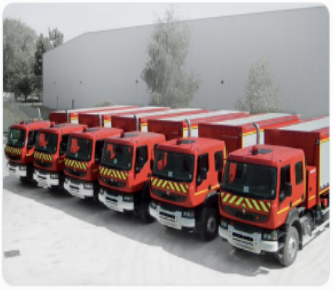

Nos pompiers
Acquisition de 6 nouveau FSD (Fourgon de Sauvetage et Déblaiement). Lors de catastrophe naturelle les équipes SDE sont sollicitées afin de dégagerla voix publique et effectue les sauvetage en milieu urbain
Acquisition de 6 nouveau FSD (Fourgon de Sauvetage et Déblaiement). Lors de catastrophe naturelle les équipes SDE sont sollicitées afin de dégagerla voix publique et effectue les sauvetage en milieu urbain
Espèce identifiée: Fraisifrog, nom latin: Fraisifrogum, pays de découverte: Listenbourg

Espèce identifiée: Sorpdile, nom latin: Sorpdium, pays de découverte: Listenbourg
La gare Centrale de Laten a été inauguré ce 17 novembre 2022. Elle a pour but de relier Laten et la capitale Lurenberg en moins de 15 minutes grâce à la technologie Hyperloop permettant d'atteindre 1253 km/h. Cela accélèra le développement économique de la région